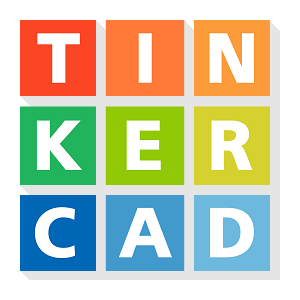
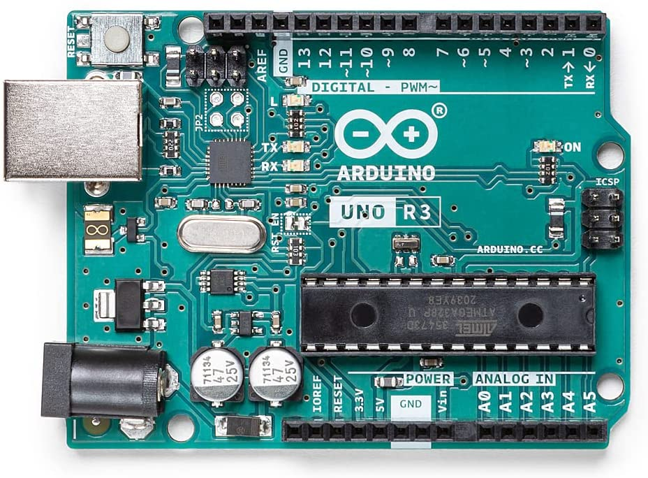

Arduino Images





Dit is de pagina voor mijn Arduino Project. Hieronder kan u alle informatie (uitleg, bestanden en foto's) er over vinden.
Hieonder kan u de link van het Word bestand downloaden.
Dit is mijn Softwareontwikkeling project! In de animatie start je op een plaats dat er redelijk normaal uitziet.
Dat is natuurlijk totdat je ziet hoe klein je eigenlijk wel niet bent!
Voor een of andere reden besluit je om in het aquarium te springen en het kasteel binnen te dringen.

Hier kan u alle benodigdheden vinden voor het project. Een Adruino en Breadboard staan hier niet op want volgens mij zijn deze twee onderdelen vanzelfsprekend nodig.
Maak een nieuw circuit aan op Tinkercad en bouw het volgende na. Als alles klopt dan zou het ledje moeten branden.
Maak een nieuw circuit aan op Tinkercad en bouw het volgende na. Als alles klopt dan zou het ledje moeten branden.
Maak een nieuw circuit aan op Tinkercad en bouw het volgende na. Als alles klopt dan zou het ledje moeten branden.
Als alles goed is zou alles nu moeten werken!
Aan de linker kant krijgt u nog eens het werkende circuit te zien!
Het rode ledje staat bijna helemaal uit, het groene ledje staat uit en het blauwe ledje staat bijna op het maximaal.